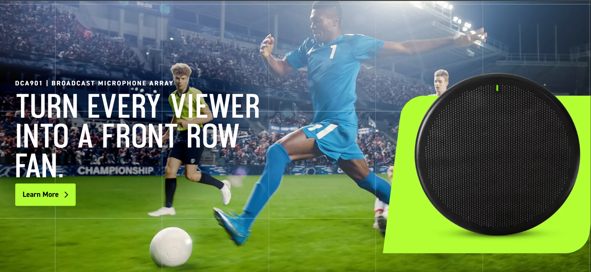

ULX-D Digital Wireless Systems: Trusted Reliability, Expanded Efficiency
Experience the reliable performance and wireless scalability of Shure ULX-D® in demanding RF environments, now with wide...
Read Article


Advanced Digital In-Ear Monitor System

Quad Channel Receiver

Quad Channel Receiver with Dante Audio

Smart Microphone & Interface

Experience the reliable performance and wireless scalability of Shure ULX-D® in demanding RF environments, now with wide...
Read Article

Explore how the game-changing capabilities of digitally steerable lobes in the DCA901 Broadcast Microphone Array are revolutionizi...
Read Article
Experience the reliable performance and wireless scalability of Shure ULX-D® in demanding RF environments, now with wide...
Read Article

Explore how the game-changing capabilities of digitally steerable lobes in the DCA901 Broadcast Microphone Array are revolutionizing...
Read ArticleOur history is the history of audio. As a company of engineers, concert goers,performers and presenters – we make products with a passion fueled by a deep understanding
and respect for the needs of the people we make them for. Since 1925, Shure has been a technology leader whose products have set the industry
standard and become synonymous with superior quality and reliability for generations of people.
Our experts offer industry-proven tips and tricks to help you find an audio solution and get the most from your gear.
Our support center offers easy and direct access to complete product documentation, software and firmware information, comparisons, and other technical tools and resources all in one place.
Free Shipping
30 Day Return Policy
Expert Tech Support